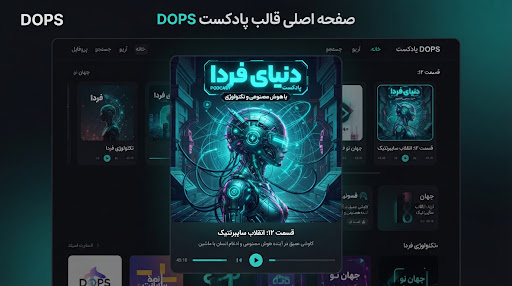

آینده هوش مصنوعی و مدلهای استدلالگر منطقی
 میزبان: علی رضایی با حضور دکتر کاوه رادمنش
میزبان: علی رضایی با حضور دکتر کاوه رادمنش
article یادداشتهای این قسمت و سرفصلها
در این گفتوگوی تفصیلی، با حضور دکتر کاوه رادمنش، پژوهشگر مدلسازی عصبی، به کالبدشکافی نسل جدید معماریهای هوش مصنوعی پرداختهایم. تمرکز اصلی ما بر این پرسش بنیادین است: آیا مدلهای زبانی واقعاً به قابلیت «استدلال منطقی و حل مسئله تعمیمیافته» دست یافتهاند یا صرفاً در حال شبیهسازی آماری پیچیدهتری از الگوهای زبانی گذشته هستند؟
همچنین بررسی میکنیم که چگونه سازوکارهایی نظیر جستجوی درختی در فضای استنتاج (Tree-of-Thought Search)، خود-اصلاحگری چندگانه (Self-Correction Iterations) و ایجنتهای بازخورددهنده، افق تازهای در برنامهنویسی خودکار، پزشکی دقیق و تحلیلهای استراتژیک کلان گشودهاند.
format_list_numbered_rtl فصلهای صوتی اپیزود (پرش مستقیم به تایمکد)
subtitles متن پیادهسازیشده اپیزود (Transcript) expand_more
علی رضایی: به هشتاد و چهارمین قسمت از پادکست دنیای فردا خوش آمدید. امروز میخواهیم درباره یکی از جذابترین مرزهای دانش محاسباتی حرف بزنیم؛ جایی که دیگر با یک ابزار ساده پرسش و پاسخ طرف نیستیم، بلکه سامانههایی پیش روی ما هستند که میتوانند برای تصمیمات خود استدلال کنند...
دکتر کاوه رادمنش: سلام علی جان و درود به شنوندگان عزیز دنیای فردا. اگر به پنج سال پیش برگردیم، بزرگترین دستاورد ما پیشبینی کلمه بعدی بود. اما اتفاقی که در نسلهای اخیر مدلهای استدلالی رخ داده، وارد کردن گامهای تفکر داخلی پیش از تولید پاسخ نهایی است...
نظرات شنوندگان پیرامون این قسمت
بخش مربوط به جستجوی درختی و خود-اصلاحگری واقعاً ذهن من را باز کرد. امیدوارم در قسمت بعدی در مورد تداخل یادگیری تقویتی با این معماریها بیشتر صحبت کنید.
میهمان این اپیزود

دکتر کاوه رادمنش
عضو هیئت علمی و پژوهشگر ارشد شبکههای پیچیده
متخصص سامانههای شناختی با بیش از ۱۵ مقاله معتبر بینالمللی در حوزه استنتاج غیرقطعی و مدلسازی شبکههای معنایی.
مشاهده صفحه پادکست اصلی ←